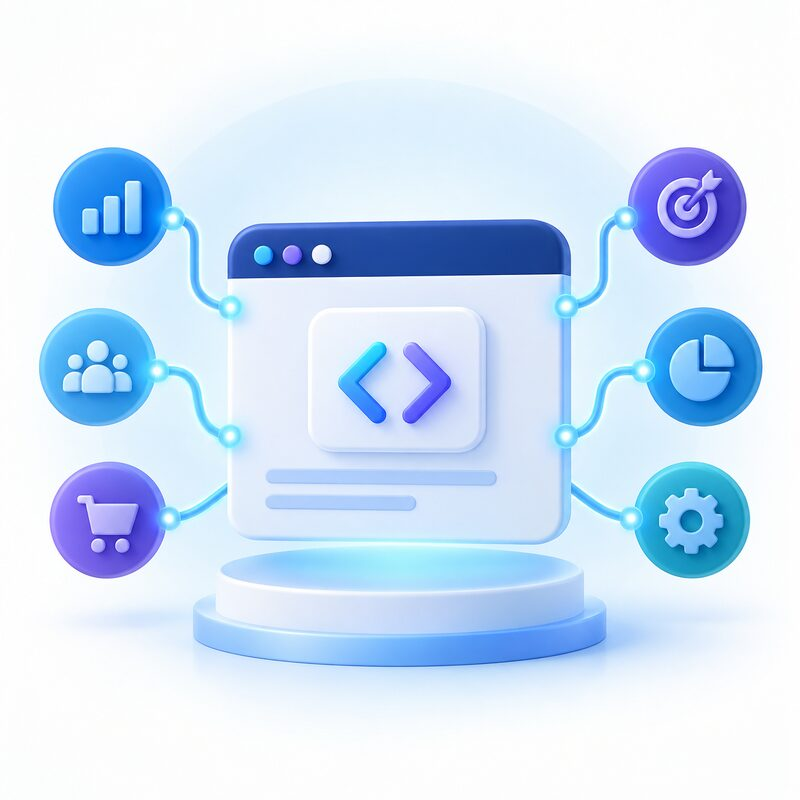

Catálogo de entrenamiento
Servicios digitales conectados con Pixel.
Explora seis servicios ficticios y comprueba cómo sus identificadores se mantienen consistentes entre el sitio, los eventos, los microdatos y el feed del catálogo.

Servicio de demostración
Meta Pixel Setup
Configuración inicial del Meta Pixel y validación de la fuente de datos.
Servicio de demostración
Event Tracking Configuration
Planificación y configuración de eventos estándar y parámetros.

Servicio de demostración
Product Catalog Setup
Creación de catálogo, fuente de datos e identificación de productos.
Servicio de demostración
Microdata Implementation Review
Revisión de OpenGraph, Schema.org y datos estructurados de producto.
Servicio de demostración
Conversions API Integration
Diseño de una conexión de eventos entre servidor y Meta.
Servicio de demostración
Digital Tracking Audit
Auditoría de eventos, parámetros, coincidencias y diagnósticos.
Los nombres, precios y servicios de este catálogo son ficticios y se utilizan exclusivamente para prácticas de capacitación.